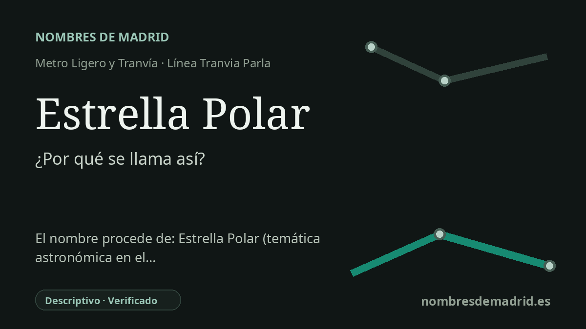

Publicado el · Investigación de Nombres de Madrid · Cómo verificamos cada origen · 7 fuentes consultadas
Respuesta rápida
Estrella Polar toma su nombre de la calle Estrella Polar de Parla Este, donde muchas vías siguen una temática astronómica. El nombre alude a Polaris, la actual estrella del norte, usada como referencia porque se encuentra muy cerca del polo norte celeste.
La historia del nombre
Estrella Polar es un nombre de transporte tomado de la calle situada junto a la parada: la calle Estrella Polar de Parla Este. En el esquema del tranvía aparece como una parada doble, Estrella Polar Norte y Estrella Polar Sur, entre Venus y Jaime I dentro del recorrido circular del Tranvía de Parla.
El nombre de la calle forma parte de la trama astronómica de Parla Este. El inventario municipal de Parla recoge en el mismo ámbito de Residencial Este la avenida de las Estrellas, la avenida de los Planetas, la avenida del Sistema Solar, la calle Estrella Polar, la calle Estrella Antares, la calle Estrella Sirio, la calle Estrella Vega y varias calles de constelaciones y signos del zodiaco. En ese contexto, la estación no conmemora a una persona, sino que toma un topónimo urbano moderno y descriptivo.
El objeto astronómico al que remite el nombre es Polaris, la actual estrella del norte. La NASA explica que Polaris está cerca del punto del cielo hacia el que apunta el eje de rotación de la Tierra en el hemisferio norte, el polo norte celeste. Por eso, para quienes observan desde el hemisferio norte, permanece aproximadamente en la misma zona del cielo y señala el norte geográfico.
El nombre resulta especialmente adecuado para una parada de transporte: la Estrella Polar ha sido una referencia tradicional de orientación, y esta parada orienta a los viajeros dentro de la expansión oriental de Parla. El Tranvía de Parla comenzó su operación comercial en 2007 y se concibió para conectar el casco urbano, Parla Centro y la línea C-4 de Cercanías, los equipamientos públicos y el nuevo desarrollo de Parla Este.
La prueba más sólida apunta a un nombre de estación derivado de una calle dentro de una planificación viaria de temática astronómica. Una fuente secundaria afirma de forma directa que la estación toma el nombre de la calle Estrella Polar; las fuentes municipales y de transporte confirman por separado la calle, las paradas y el patrón astronómico del entorno. La afirmación más amplia de que Parla Este sea uno de los barrios astronómicos más coherentes de España debe tratarse como interpretación mientras no aparezca un documento urbanístico que lo diga expresamente.